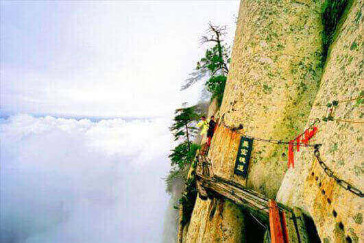
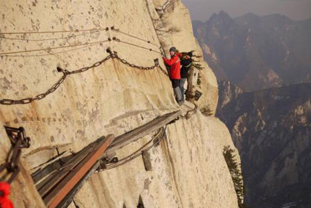
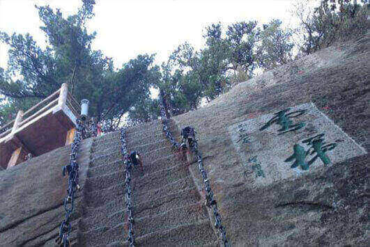
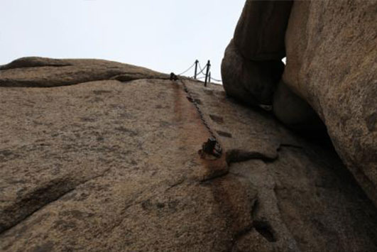
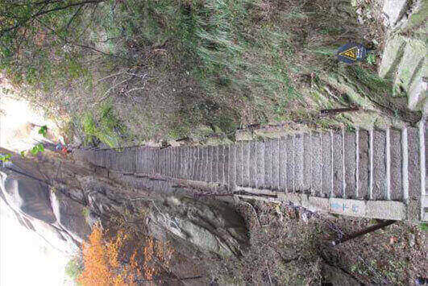
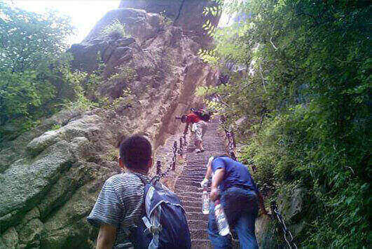
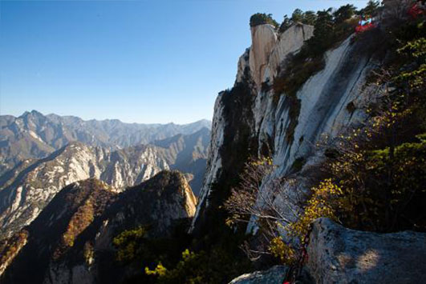
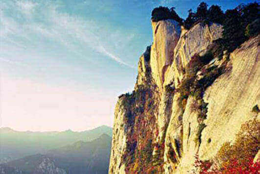

morly旅游网
华山，古称“西岳”，雅称“太华山”，为中国著名的五岳之一，是中华文明的发祥地，“中华”和“华夏”之“华”，就源于华山。华山位于陕西省渭南市华阴市。南接秦岭，北瞰黄渭，自古以来就有“奇险天下第一山”的说法。华山还是第一批国家重点风景名胜区，国家AAAAA级旅游景区，全国重点文物保护单位，国家地质公园。华山是中华民族的圣山，据清代国学大师章太炎和历代专家学者考证：华夏民族最初形成并居住于“华山之周”，名其国土曰华，其后人迹所至，遍及九州，华之名始广。
谈及华山，我首先想到的就是武侠小说中，历代武林高手都华山论剑。以前我有过这样一个疑惑，为什么大多武林高手都选在华山论剑而不是在泰山、黄山、衡山、恒山、嵩山呢？后来我才知道，只有华山才符合武林中人的个性，因为华山不同与黄山之美、泰山之雄、衡山之秀、恒山之奇、嵩山之绝，华山的险峻和直爽才符合武林中人的豪迈气概和英雄本色。
华山好玩的景区众多，有凌空架设的长空栈道，三面临空的鹞子翻身，以及在峭壁绝崖上凿出的千尺幢、百尺峡、老君犁沟等，其中华岳仙掌被列为关中八景之首。长空栈道位于南天门外，是华山著名险道之首。栈道分三段：南天门石坊至朝元洞西为上段，折而下，崖隙横贯铁棍，形如凌空悬梯，游人须挽索逐级而下，称之“鸡下架”，为中段，再西折为下段。长空栈道修建在光溜溜的千仞绝壁上，栈道宽仅30多公分，只有悬崖上有铁链可供游客抓手，走在上面向下望去，深不见底，走起来十分凶险，极具挑战性，因此吸引了许多探险者前来挑战，勇者如履长空，心旷神怡，怯者胆战心惊，屏气挪步。鹞子翻身位于华山东峰，也是华山著名的险道之一。游人至此，须面壁挽索，以脚尖探寻石窝，交替而下，其中几步须如鹰鹞一般、左右翻转身体才可通过，故名“鹞子翻身”。从视觉效果上，鹞子翻身或许比不上长空栈道，但是鹞子翻身走起来难度更大一点，因为它的栈道是向内倾斜的，并且铁链十分松动，左右摇摆的幅度过大，不易稳住身体。千尺幢位于回心石之上，是华山第一险境。山幢壁直立，坡度为70°，仅可两人穿行。从上到下共有370多个台阶，皆不满足宽。“百尺峡”也叫“百丈崖”，百尺峡位于千尺幢北，是登华山的第二个险境。百尺峡被飞来的两颗石块从中撑开，从下走过时，生怕石块从两壁间掉下来，这就是“惊心石”。走过之后，看这两块石屹然不动，内心又安稳下来，因此也叫“平心石”。“老君犁沟”原为“老君离垢”。用道教的话说，这就是离开尘垢到达仙境的意思。老君犁沟位于群仙观上方，据传这里原来没有路，是老子李耳驾青牛用铁犁开的，形如耕地时留下的犁沟，故被称为“老君犁沟”。“犁险于幢，幢险而犁突。”这描写的是夹在陡峭石壁之间一条深不可测的沟状险道，石阶570多阶。十分险要。华岳仙掌是关中八景之一。仙掌是华山东峰奇景之一。掌迹在东北处的仙掌崖上，它五指具备，宛如左掌，是值得观赏的一处美景。
当然，华山美景可不止有这一点，华山的著名景区多达210余处，其它美景我就不一一阐述了，希望你们能发现华山之美。
门票价格
旺季（3月1日—11月底）160元/人次，淡季（12月1日—次年2月底）100元/人，门票有效期2天（含游客中心至各景点间交通费，门票中不含黄甫峪、瓮峪旅游专线客运车交通费）。
长空栈道
长空栈道位于华山南峰东侧山腰，是华山派第一代宗师元代高道贺志真为远离尘世静修成仙，在万仞绝壁上镶嵌石钉搭木椽而筑。栈道上下皆是悬崖绝壁，铁索横悬，由条石搭成尺许路面，下由石柱固定，游人至此，面壁贴腹，屏气挪步，被誉为“华山第一天险”。
 鹞子翻身
鹞子翻身在华山东峰，是通往下棋亭的必由之路，为华山著名的险道之一。其路凿于倒坎悬崖上，下视唯见寒索垂于凌空，不见路径。
 千尺幢
千尺幢，位于陕西省渭南市，是一条峭壁上的大裂缝，陷在两旁的巨石之间，共370余级台阶，坡度极陡，每级台阶的宽度不过三分之一的脚掌。
 华岳仙掌
华岳仙掌是关中八景之一。仙掌是华山东峰奇景之一。掌迹在东北处的仙掌崖上，在东峰是看不见的，“在华山车站附近才会看得真切，它五指具备，宛如左掌。作为关中八景之首，的确是值得观赏的一处美景。
 内容整理至网络，如有侵权，请联系我们！1255394075@qq.com